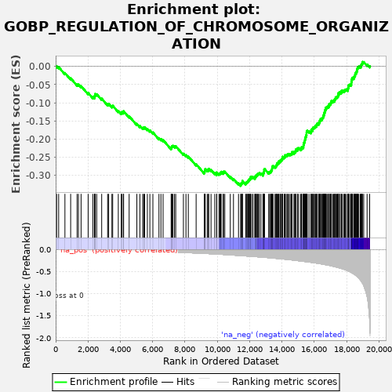
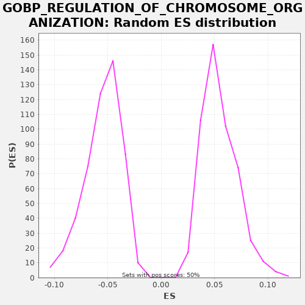

| | | Dataset | A_X_tradeoff |
| Phenotype | NoPhenotypeAvailable |
| Upregulated in class | na_neg |
| GeneSet | GOBP_REGULATION_OF_CHROMOSOME_ORGANIZATION |
| Enrichment Score (ES) | -0.32911593 |
| Normalized Enrichment Score (NES) | -6.0341086 |
| Nominal p-value | 0.0 |
| FDR q-value | 0.0 |
| FWER p-Value | 0.0 |
Table: GSEA Results Summary

Fig 1: Enrichment plot: GOBP_REGULATION_OF_CHROMOSOME_ORGANIZATION
Profile of the Running ES Score & Positions of GeneSet Members on the Rank Ordered List
| SYMBOL | RANK IN GENE LIST | RANK METRIC SCORE | RUNNING ES | CORE ENRICHMENT | | 1 | GATA3 | 60 | -0.000 | 0.0008 | No |
| 2 | PRKD2 | 185 | -0.001 | -0.0017 | No |
| 3 | MNAT1 | 573 | -0.003 | -0.0179 | No |
| 4 | BCL6 | 928 | -0.005 | -0.0324 | No |
| 5 | FOXP3 | 1326 | -0.007 | -0.0492 | No |
| 6 | SHCBP1L | 1411 | -0.008 | -0.0496 | No |
| 7 | CDK9 | 1572 | -0.008 | -0.0540 | No |
| 8 | MAPK15 | 2010 | -0.011 | -0.0728 | No |
| 9 | GCG | 2296 | -0.013 | -0.0837 | No |
| 10 | TAL1 | 2393 | -0.013 | -0.0848 | No |
| 11 | PINX1 | 2406 | -0.013 | -0.0815 | No |
| 12 | SRC | 2434 | -0.014 | -0.0790 | No |
| 13 | RESF1 | 2443 | -0.014 | -0.0754 | No |
| 14 | MAPKAPK5 | 2539 | -0.014 | -0.0765 | No |
| 15 | NEK6 | 2848 | -0.016 | -0.0886 | No |
| 16 | RPS6KA4 | 3215 | -0.019 | -0.1037 | No |
| 17 | PINK1 | 3278 | -0.019 | -0.1030 | No |
| 18 | ANAPC5 | 3481 | -0.021 | -0.1096 | No |
| 19 | NSMCE2 | 3529 | -0.021 | -0.1081 | No |
| 20 | ING2 | 3876 | -0.023 | -0.1222 | No |
| 21 | USP44 | 4059 | -0.025 | -0.1277 | No |
| 22 | CCT2 | 4089 | -0.025 | -0.1253 | No |
| 23 | STN1 | 4183 | -0.026 | -0.1262 | No |
| 24 | DKC1 | 4204 | -0.026 | -0.1233 | No |
| 25 | MAD2L1BP | 4547 | -0.029 | -0.1372 | No |
| 26 | SSBP1 | 5024 | -0.034 | -0.1580 | No |
| 27 | NAA10 | 5213 | -0.036 | -0.1639 | No |
| 28 | RTF1 | 5385 | -0.038 | -0.1688 | No |
| 29 | PHF1 | 5453 | -0.039 | -0.1684 | No |
| 30 | AICDA | 5508 | -0.039 | -0.1673 | No |
| 31 | TADA2A | 5674 | -0.041 | -0.1719 | No |
| 32 | RMI2 | 5829 | -0.043 | -0.1760 | No |
| 33 | SLX1B | 6016 | -0.045 | -0.1818 | No |
| 34 | TINF2 | 6391 | -0.050 | -0.1973 | No |
| 35 | KLHL22 | 6514 | -0.052 | -0.1997 | No |
| 36 | GTF2H2 | 6647 | -0.054 | -0.2027 | No |
| 37 | HECW2 | 7148 | -0.060 | -0.2248 | No |
| 38 | ARRB1 | 7166 | -0.061 | -0.2217 | No |
| 39 | HDAC8 | 7198 | -0.061 | -0.2194 | No |
| 40 | ANAPC11 | 7256 | -0.062 | -0.2184 | No |
| 41 | PML | 7354 | -0.063 | -0.2195 | No |
| 42 | CDC26 | 7429 | -0.065 | -0.2195 | No |
| 43 | PIWIL2 | 7905 | -0.071 | -0.2403 | No |
| 44 | WDR61 | 8062 | -0.074 | -0.2444 | No |
| 45 | NELFE | 8208 | -0.077 | -0.2481 | No |
| 46 | SMARCB1 | 8692 | -0.084 | -0.2693 | No |
| 47 | LRRK2 | 9194 | -0.093 | -0.2914 | No |
| 48 | JDP2 | 9216 | -0.093 | -0.2886 | No |
| 49 | CDC16 | 9231 | -0.094 | -0.2854 | No |
| 50 | APOBEC1 | 9253 | -0.094 | -0.2825 | No |
| 51 | PRDM9 | 9379 | -0.097 | -0.2851 | No |
| 52 | XRCC1 | 9451 | -0.098 | -0.2849 | No |
| 53 | TEN1 | 9468 | -0.098 | -0.2818 | No |
| 54 | TRAPPC12 | 9614 | -0.101 | -0.2854 | No |
| 55 | SETMAR | 9846 | -0.106 | -0.2935 | No |
| 56 | LIF | 9961 | -0.108 | -0.2955 | No |
| 57 | TRIP13 | 9969 | -0.108 | -0.2919 | No |
| 58 | PRDM12 | 10104 | -0.111 | -0.2950 | No |
| 59 | MAPT | 10165 | -0.112 | -0.2942 | No |
| 60 | FBXO4 | 10217 | -0.114 | -0.2929 | No |
| 61 | HNRNPC | 10241 | -0.114 | -0.2901 | No |
| 62 | ACD | 10360 | -0.116 | -0.2923 | No |
| 63 | XRCC3 | 10387 | -0.117 | -0.2898 | No |
| 64 | GNL3 | 10466 | -0.119 | -0.2899 | No |
| 65 | SIRT6 | 10805 | -0.127 | -0.3036 | No |
| 66 | SETDB2 | 11003 | -0.132 | -0.3099 | No |
| 67 | SREBF1 | 11315 | -0.140 | -0.3221 | No |
| 68 | PIF1 | 11450 | -0.143 | -0.3252 | Yes |
| 69 | CTC1 | 11472 | -0.143 | -0.3223 | Yes |
| 70 | IL1B | 11507 | -0.144 | -0.3202 | Yes |
| 71 | ERCC4 | 11558 | -0.145 | -0.3188 | Yes |
| 72 | UBE2N | 11560 | -0.145 | -0.3150 | Yes |
| 73 | RPS6KA5 | 11764 | -0.151 | -0.3216 | Yes |
| 74 | SLF1 | 11797 | -0.152 | -0.3193 | Yes |
| 75 | UBE2C | 11847 | -0.153 | -0.3179 | Yes |
| 76 | TRIM28 | 11889 | -0.154 | -0.3161 | Yes |
| 77 | RIOK2 | 11925 | -0.155 | -0.3140 | Yes |
| 78 | MPHOSPH8 | 11957 | -0.156 | -0.3117 | Yes |
| 79 | BUB3 | 11997 | -0.157 | -0.3098 | Yes |
| 80 | KAT2A | 12041 | -0.158 | -0.3081 | Yes |
| 81 | MCPH1 | 12055 | -0.158 | -0.3048 | Yes |
| 82 | MAPK3 | 12124 | -0.160 | -0.3044 | Yes |
| 83 | PPARGC1A | 12207 | -0.162 | -0.3048 | Yes |
| 84 | ANAPC4 | 12325 | -0.165 | -0.3069 | Yes |
| 85 | LCMT1 | 12333 | -0.165 | -0.3034 | Yes |
| 86 | ZBTB7B | 12384 | -0.167 | -0.3020 | Yes |
| 87 | ANAPC15 | 12409 | -0.167 | -0.2993 | Yes |
| 88 | CCNB1 | 12461 | -0.169 | -0.2981 | Yes |
| 89 | PNKP | 12495 | -0.170 | -0.2958 | Yes |
| 90 | XRCC5 | 12554 | -0.172 | -0.2949 | Yes |
| 91 | ATR | 12604 | -0.173 | -0.2935 | Yes |
| 92 | PIH1D1 | 12704 | -0.176 | -0.2948 | Yes |
| 93 | ERCC1 | 12829 | -0.179 | -0.2973 | Yes |
| 94 | ISL1 | 12837 | -0.180 | -0.2937 | Yes |
| 95 | RTEL1 | 12876 | -0.180 | -0.2917 | Yes |
| 96 | DNMT3B | 12897 | -0.181 | -0.2889 | Yes |
| 97 | CDT1 | 12901 | -0.181 | -0.2851 | Yes |
| 98 | CDC6 | 12924 | -0.182 | -0.2823 | Yes |
| 99 | ATF7IP | 13184 | -0.190 | -0.2918 | Yes |
| 100 | TCP1 | 13239 | -0.192 | -0.2907 | Yes |
| 101 | SPHK2 | 13297 | -0.194 | -0.2897 | Yes |
| 102 | WDR5 | 13328 | -0.195 | -0.2874 | Yes |
| 103 | MAP3K4 | 13363 | -0.196 | -0.2852 | Yes |
| 104 | SLX4 | 13385 | -0.197 | -0.2824 | Yes |
| 105 | TTK | 13397 | -0.197 | -0.2790 | Yes |
| 106 | KMT2E | 13405 | -0.197 | -0.2754 | Yes |
| 107 | TEX14 | 13453 | -0.199 | -0.2739 | Yes |
| 108 | PLK1 | 13570 | -0.203 | -0.2760 | Yes |
| 109 | RUVBL2 | 13625 | -0.205 | -0.2749 | Yes |
| 110 | ANAPC1 | 13652 | -0.206 | -0.2723 | Yes |
| 111 | ESPL1 | 13685 | -0.207 | -0.2701 | Yes |
| 112 | FBXO5 | 13693 | -0.207 | -0.2665 | Yes |
| 113 | NBN | 13751 | -0.209 | -0.2655 | Yes |
| 114 | TACC3 | 13807 | -0.210 | -0.2644 | Yes |
| 115 | CCT3 | 13813 | -0.211 | -0.2608 | Yes |
| 116 | TET1 | 13889 | -0.213 | -0.2607 | Yes |
| 117 | WBP2 | 13913 | -0.214 | -0.2580 | Yes |
| 118 | PPHLN1 | 13968 | -0.216 | -0.2569 | Yes |
| 119 | NEK7 | 14018 | -0.218 | -0.2555 | Yes |
| 120 | SNW1 | 14025 | -0.218 | -0.2519 | Yes |
| 121 | ANAPC7 | 14037 | -0.219 | -0.2485 | Yes |
| 122 | IK | 14136 | -0.222 | -0.2497 | Yes |
| 123 | LIG4 | 14179 | -0.224 | -0.2479 | Yes |
| 124 | PTTG1 | 14191 | -0.224 | -0.2446 | Yes |
| 125 | MAP2K7 | 14263 | -0.227 | -0.2443 | Yes |
| 126 | KNTC1 | 14326 | -0.229 | -0.2436 | Yes |
| 127 | PRKD1 | 14364 | -0.231 | -0.2416 | Yes |
| 128 | DDX11 | 14424 | -0.233 | -0.2407 | Yes |
| 129 | PPP1R10 | 14510 | -0.236 | -0.2412 | Yes |
| 130 | MIER1 | 14570 | -0.239 | -0.2404 | Yes |
| 131 | ZW10 | 14621 | -0.242 | -0.2390 | Yes |
| 132 | CCT6A | 14627 | -0.242 | -0.2354 | Yes |
| 133 | PHF19 | 14748 | -0.247 | -0.2377 | Yes |
| 134 | EXOSC10 | 14763 | -0.248 | -0.2345 | Yes |
| 135 | BRD4 | 14836 | -0.251 | -0.2343 | Yes |
| 136 | TERF2 | 14859 | -0.252 | -0.2315 | Yes |
| 137 | TADA2B | 14870 | -0.252 | -0.2281 | Yes |
| 138 | DLGAP5 | 14964 | -0.257 | -0.2290 | Yes |
| 139 | DCP2 | 14970 | -0.257 | -0.2253 | Yes |
| 140 | MAD2L2 | 15038 | -0.260 | -0.2248 | Yes |
| 141 | AURKB | 15163 | -0.265 | -0.2274 | Yes |
| 142 | PARN | 15211 | -0.267 | -0.2259 | Yes |
| 143 | CDC27 | 15217 | -0.268 | -0.2222 | Yes |
| 144 | CDCA5 | 15303 | -0.272 | -0.2227 | Yes |
| 145 | AKAP8L | 15331 | -0.273 | -0.2202 | Yes |
| 146 | TENT4B | 15335 | -0.273 | -0.2164 | Yes |
| 147 | BECN1 | 15360 | -0.274 | -0.2137 | Yes |
| 148 | PCID2 | 15362 | -0.274 | -0.2098 | Yes |
| 149 | RB1 | 15396 | -0.276 | -0.2076 | Yes |
| 150 | TERF1 | 15418 | -0.277 | -0.2048 | Yes |
| 151 | PSMG2 | 15428 | -0.277 | -0.2013 | Yes |
| 152 | BUB1 | 15442 | -0.278 | -0.1980 | Yes |
| 153 | CHTOP | 15458 | -0.279 | -0.1949 | Yes |
| 154 | CDC23 | 15487 | -0.280 | -0.1924 | Yes |
| 155 | CENPE | 15498 | -0.281 | -0.1890 | Yes |
| 156 | MAD1L1 | 15524 | -0.282 | -0.1863 | Yes |
| 157 | CENPV | 15526 | -0.282 | -0.1825 | Yes |
| 158 | NAT10 | 15535 | -0.282 | -0.1789 | Yes |
| 159 | SIRT1 | 15568 | -0.284 | -0.1767 | Yes |
| 160 | HMBOX1 | 15679 | -0.289 | -0.1785 | Yes |
| 161 | HNRNPD | 15798 | -0.295 | -0.1807 | Yes |
| 162 | VEGFA | 15816 | -0.296 | -0.1776 | Yes |
| 163 | CHFR | 15819 | -0.296 | -0.1738 | Yes |
| 164 | PHF2 | 15905 | -0.301 | -0.1743 | Yes |
| 165 | RNF40 | 15908 | -0.301 | -0.1704 | Yes |
| 166 | SMG5 | 15936 | -0.303 | -0.1679 | Yes |
| 167 | FEN1 | 16005 | -0.306 | -0.1675 | Yes |
| 168 | NABP2 | 16046 | -0.308 | -0.1657 | Yes |
| 169 | MAD2L1 | 16076 | -0.310 | -0.1632 | Yes |
| 170 | OGT | 16147 | -0.314 | -0.1629 | Yes |
| 171 | NAF1 | 16157 | -0.314 | -0.1595 | Yes |
| 172 | MTF2 | 16184 | -0.316 | -0.1569 | Yes |
| 173 | TASOR | 16274 | -0.321 | -0.1576 | Yes |
| 174 | RAD50 | 16287 | -0.321 | -0.1543 | Yes |
| 175 | TERF2IP | 16337 | -0.324 | -0.1529 | Yes |
| 176 | SMAD4 | 16343 | -0.325 | -0.1492 | Yes |
| 177 | ATM | 16392 | -0.328 | -0.1478 | Yes |
| 178 | BUB1B | 16397 | -0.328 | -0.1440 | Yes |
| 179 | BRD7 | 16483 | -0.333 | -0.1445 | Yes |
| 180 | AXIN2 | 16496 | -0.334 | -0.1412 | Yes |
| 181 | NDC80 | 16540 | -0.337 | -0.1395 | Yes |
| 182 | DHX36 | 16565 | -0.339 | -0.1368 | Yes |
| 183 | NAP1L2 | 16577 | -0.340 | -0.1335 | Yes |
| 184 | PHF8 | 16618 | -0.343 | -0.1316 | Yes |
| 185 | DUSP1 | 16620 | -0.343 | -0.1277 | Yes |
| 186 | XRN1 | 16646 | -0.345 | -0.1251 | Yes |
| 187 | MYC | 16673 | -0.347 | -0.1225 | Yes |
| 188 | NSD3 | 16683 | -0.348 | -0.1191 | Yes |
| 189 | CTR9 | 16720 | -0.350 | -0.1170 | Yes |
| 190 | PAXIP1 | 16721 | -0.351 | -0.1131 | Yes |
| 191 | PAF1 | 16782 | -0.355 | -0.1122 | Yes |
| 192 | SENP6 | 16822 | -0.357 | -0.1103 | Yes |
| 193 | SLF2 | 16887 | -0.362 | -0.1097 | Yes |
| 194 | SMG1 | 16916 | -0.364 | -0.1073 | Yes |
| 195 | GEN1 | 16923 | -0.364 | -0.1036 | Yes |
| 196 | HNRNPA1 | 16993 | -0.371 | -0.1033 | Yes |
| 197 | CCT7 | 17017 | -0.373 | -0.1005 | Yes |
| 198 | SIN3A | 17054 | -0.375 | -0.0985 | Yes |
| 199 | SART3 | 17059 | -0.376 | -0.0948 | Yes |
| 200 | YLPM1 | 17151 | -0.383 | -0.0956 | Yes |
| 201 | SPDL1 | 17208 | -0.388 | -0.0945 | Yes |
| 202 | MECP2 | 17260 | -0.392 | -0.0933 | Yes |
| 203 | BRCA1 | 17269 | -0.393 | -0.0897 | Yes |
| 204 | ZWINT | 17312 | -0.397 | -0.0880 | Yes |
| 205 | USP7 | 17325 | -0.398 | -0.0847 | Yes |
| 206 | CTBP1 | 17393 | -0.405 | -0.0842 | Yes |
| 207 | MAPK1 | 17435 | -0.410 | -0.0824 | Yes |
| 208 | CCT8 | 17473 | -0.414 | -0.0804 | Yes |
| 209 | TNKS | 17480 | -0.415 | -0.0768 | Yes |
| 210 | DYNC1LI1 | 17488 | -0.416 | -0.0732 | Yes |
| 211 | CDC20 | 17569 | -0.423 | -0.0735 | Yes |
| 212 | TPR | 17580 | -0.424 | -0.0700 | Yes |
| 213 | RNF4 | 17675 | -0.434 | -0.0710 | Yes |
| 214 | PAXBP1 | 17676 | -0.434 | -0.0671 | Yes |
| 215 | KAT7 | 17738 | -0.442 | -0.0663 | Yes |
| 216 | SETDB1 | 17835 | -0.452 | -0.0674 | Yes |
| 217 | AKAP8 | 17877 | -0.458 | -0.0656 | Yes |
| 218 | MCM2 | 17915 | -0.462 | -0.0636 | Yes |
| 219 | AUTS2 | 17986 | -0.472 | -0.0633 | Yes |
| 220 | NIPBL | 18080 | -0.488 | -0.0642 | Yes |
| 221 | RNF20 | 18086 | -0.489 | -0.0605 | Yes |
| 222 | TNKS2 | 18108 | -0.492 | -0.0576 | Yes |
| 223 | UPF1 | 18119 | -0.494 | -0.0542 | Yes |
| 224 | CDK5RAP2 | 18134 | -0.498 | -0.0510 | Yes |
| 225 | CTCF | 18189 | -0.505 | -0.0499 | Yes |
| 226 | CCT5 | 18267 | -0.521 | -0.0500 | Yes |
| 227 | CENPF | 18296 | -0.526 | -0.0475 | Yes |
| 228 | WAPL | 18299 | -0.527 | -0.0437 | Yes |
| 229 | FMR1 | 18315 | -0.530 | -0.0405 | Yes |
| 230 | CCT4 | 18326 | -0.532 | -0.0371 | Yes |
| 231 | SMC5 | 18336 | -0.535 | -0.0336 | Yes |
| 232 | SMG6 | 18361 | -0.539 | -0.0309 | Yes |
| 233 | HNRNPA2B1 | 18444 | -0.556 | -0.0313 | Yes |
| 234 | NUMA1 | 18461 | -0.560 | -0.0282 | Yes |
| 235 | RIF1 | 18499 | -0.570 | -0.0262 | Yes |
| 236 | CTNNB1 | 18528 | -0.578 | -0.0237 | Yes |
| 237 | GNL3L | 18537 | -0.580 | -0.0202 | Yes |
| 238 | NEK2 | 18556 | -0.587 | -0.0172 | Yes |
| 239 | JARID2 | 18616 | -0.604 | -0.0163 | Yes |
| 240 | TOP2A | 18631 | -0.610 | -0.0131 | Yes |
| 241 | GLYR1 | 18644 | -0.613 | -0.0098 | Yes |
| 242 | ATRX | 18664 | -0.616 | -0.0068 | Yes |
| 243 | KDM1A | 18683 | -0.624 | -0.0038 | Yes |
| 244 | RAD21 | 18706 | -0.633 | -0.0010 | Yes |
| 245 | KMT2A | 18759 | -0.649 | 0.0002 | Yes |
| 246 | APC | 18846 | -0.692 | -0.0003 | Yes |
| 247 | PARP1 | 18897 | -0.715 | 0.0010 | Yes |
| 248 | CUL3 | 18903 | -0.718 | 0.0047 | Yes |
| 249 | MUC1 | 18935 | -0.739 | 0.0070 | Yes |
| 250 | HNRNPU | 18971 | -0.758 | 0.0091 | Yes |
| 251 | SFPQ | 18979 | -0.761 | 0.0127 | Yes |
| 252 | DNMT1 | 19063 | -0.816 | 0.0123 | Yes |
| 253 | MYB | 19271 | -1.066 | 0.0054 | Yes |
| 254 | PKIB | 19431 | -1.632 | 0.0011 | Yes |
Table: GSEA details [plain text format]

Fig 2: GOBP_REGULATION_OF_CHROMOSOME_ORGANIZATION: Random ES distribution
Gene set null distribution of ES for GOBP_REGULATION_OF_CHROMOSOME_ORGANIZATION